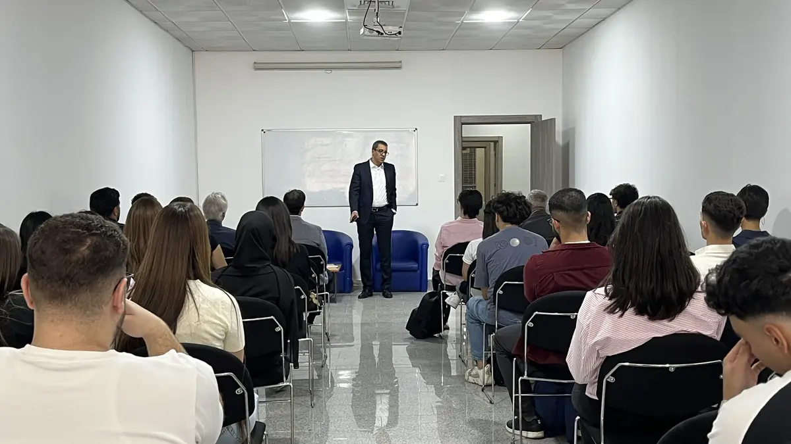
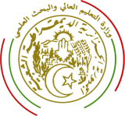

Une école de management depuis 1996.
Fondée en 1996 à Alger, MDI Algiers Business School est le premier établissement privé de formation supérieure en management d’Algérie, agréé par le Ministère de l’Enseignement Supérieur et de la Recherche Scientifique.

Présentation
Former des managers responsables.
Vision. Acteur de référence reconnu par le monde des affaires en Algérie, MDI vise à devenir un pôle d’excellence de formation et de recherche appliquée en management en Afrique.
Mission. Former des managers responsables, ouverts sur le monde et capables de s’adapter aux changements d’un environnement globalisé, grâce à une faculté pluridisciplinaire, une pédagogie rigoureuse et innovante, et une recherche appliquée au service des entreprises.
Textes de la direction
Le corps professoralFormer
Former et révéler les talents
Études de cas, projets en équipe, stage, dirigeants invités en cours : la pédagogie prépare à devenir manager ou entrepreneur.
Les formationsInnover
Adopter des démarches innovantes
Transformations des modes de management, enjeux digitaux et sociétaux : nos approches pédagogiques préparent à relever des défis globaux.
La rechercheS’ouvrir
S’ouvrir à l’international
L’expérience internationale fait gagner en maturité. Elle s’appuie sur des accords de pédagogie et de recherche avec des universités et business schools, notamment en France, en Espagne, en Turquie, en Tunisie et au Canada.
Les parcours internationaux3 000+
Diplômés
diplômés depuis la création de l’école
87%
Insertion
taux moyen d’insertion trois mois après le diplôme
16
Partenaires
universités et business schools partenaires dans le monde
Chiffres publiés par l’école.
Mot du Directeur Général
Choisir MDI, c’est rejoindre une école tournée vers l’action, l’avenir et la création de valeur durable.
Dr Amine Oussedik, Directeur Général

Une école tournée vers l’action.
Depuis sa création, MDI Algiers Business School s’est imposée comme une référence dans le paysage de la formation managériale en Algérie. Portée par des valeurs fortes, excellence, ouverture, innovation et responsabilité, notre école forme des managers capables d’anticiper, de conduire et d’incarner le changement, avec éthique et discernement.
À MDI, l’étudiant est au cœur de notre démarche pédagogique. Il est écouté, accompagné et encouragé à prendre des initiatives. Il évolue dans un environnement stimulant qui favorise l’autonomie, la créativité et l’esprit de leadership. Notre gouvernance académique participative soutient son engagement et son développement personnel autant que professionnel.
Conscients des mutations profondes du monde, nous intégrons pleinement dans nos programmes les enjeux actuels : intelligence artificielle, transformation digitale et développement durable. Nous adaptons continuellement nos contenus aux besoins réels du marché de l’emploi et aux défis sociétaux émergents.
Notre offre de formation continue permet aux cadres et professionnels de renforcer leurs compétences tout au long de leur carrière. Ce lien permanent avec le monde de l’entreprise garantit des contenus concrets, utiles et immédiatement opérationnels.
Par ailleurs, notre recherche appliquée, portée notamment par la revue scientifique ManagementS, éclaire les grands défis du management contemporain. Elle enrichit nos enseignements et alimente une réflexion stratégique utile aux décideurs économiques.
Enfin, notre incubateur labellisé reflète notre engagement en faveur de l’entrepreneuriat. Véritable catalyseur d’idées, il soutient les porteurs de projets innovants et contribue à faire émerger un écosystème entrepreneurial agile et responsable.
Choisir MDI, c’est faire le choix de devenir un leader éclairé, capable d’exercer une influence positive sur son environnement.
Dr Amine Oussedik
Directeur Général de MDI Algiers Business School depuis janvier 2025
Valeurs
Quatre valeurs qui construisent notre culture.
Excellence, ouverture, innovation, responsabilité : les mots que l’école s’est donnés, et qui engagent ses équipes autant que ses étudiants.
Excellence
C’est notre feuille de route : apporter la meilleure prestation possible, chercher sans cesse à nous améliorer, être exigeants envers nous-mêmes et avec nos étudiants.
Ouverture
Elle développe la curiosité, l’écoute, le partage et le respect de la différence, pour comprendre un monde de plus en plus complexe.
Innovation
Nous encourageons la créativité et l’esprit entrepreneurial, le meilleur chemin pour anticiper les évolutions et créer de la valeur.
Responsabilité
Rigueur et intégrité dans toutes nos activités, et un engagement sociétal concrétisé par notre adhésion à l’initiative PRME des Nations unies.
Qualité
Une qualité certifiée ISO 9001:2015.
Le système de management de la qualité de MDI est certifié selon la norme ISO 9001 version 2015. À l’occasion de ses 30 ans, la direction a publié une nouvelle Politique Qualité, construite autour de quatre engagements.
Politique Qualité 2026 — quatre engagements de la direction
- Satisfaction durable des apprenants et des partenaires
Des programmes conformes aux attentes des parties prenantes, une qualité pédagogique renforcée, l’employabilité et la pertinence des compétences transmises.
- Conformité légale, réglementaire et normative
Application rigoureuse des obligations en vigueur et anticipation des évolutions réglementaires.
- Pilotage de la performance du SMQ
Identification et maîtrise des risques et opportunités, y compris ceux liés au changement climatique lorsqu’ils sont pertinents, et objectifs mesurables.
- Leadership, engagement et compétence du personnel
Des équipes mobilisées autour d’une culture qualité partagée et des compétences développées par la formation continue.
Politique communiquée, comprise et appliquée à tous les niveaux de l’établissement, revue périodiquement. Trois parties prenantes prioritaires : les apprenants, les entreprises partenaires, les acteurs institutionnels et réglementaires.
Reconnaissance
Agréée par l’État, classée par Eduniversal.
Les distinctions et les réseaux qui situent l’école : un classement international, un agrément de l’État et des engagements collectifs.
Classement Eduniversal
4 Palmes « Top Business School » 2025
Première place du classement Eduniversal des écoles de commerce en Algérie en 2023 et en 2024, puis 4e Palme en 2025 : une distinction qui récompense l’excellence académique, l’ouverture internationale et les liens avec le monde professionnel.
L’annonceAgrément de l’État
Un établissement privé agréé
MDI est un établissement privé d’enseignement supérieur agréé par le Ministère de l’Enseignement Supérieur et de la Recherche Scientifique (MESRS), certifié ISO 9001:2015 pour son système de management de la qualité.
La qualitéRéseaux et engagements
PRME et GEM
Signataire des Principles for Responsible Management Education des Nations unies et membre du Groupe des Écoles de Management, aux côtés de l’EFTG.
Nos partenaires
Agréée MESRS · Algérie- PRME — Nations unies (nouvel onglet)
- Groupe des Écoles de Management
Ce que cela signifie
L’agrément du MESRS fait de MDI un établissement privé d’enseignement supérieur autorisé par l’État ; pour poursuivre dans un établissement public, le MESRS prévoit une équivalence du diplôme. La certification ISO 9001:2015 porte sur le système de management de la qualité de l’école.
Les diplômes sont-ils reconnus ? Lire la FAQSources : classement Eduniversal, fiche MDI (nouvel onglet) · textes du MESRS sur les établissements privés (nouvel onglet) · fiche PRME de MDI (nouvel onglet).
Trente ans
Sept dates qui ont fait l’école.
Trente ans en sept dates : de la fondation en 1996 au trentième anniversaire, l’histoire d’une école qui a grandi avec l’économie algérienne.
- 1996
Fondation à Alger
MDI ouvre comme premier établissement privé de formation supérieure en management en Algérie.
- 2018
14e colloque international
En février 2018, le colloque international de MDI pose la question « Développer le potentiel humain en Afrique : quelles compétences pour l’émergence africaine ? ».
- 2021
Parcours avec HEC Montréal
Réunions de coordination des parcours B.A.A. 2+2 et D.E.S.S. 1+1 avec HEC Montréal (10 février et 9 novembre 2021) : treize étudiants recommandés pour poursuivre à Montréal.
- 2023
Première place Eduniversal
MDI prend la tête du classement Eduniversal des écoles de commerce en Algérie, une place conservée en 2024.
- 2024
GEM-Start labellisé
En septembre 2024, l’incubateur de l’école obtient le label officiel « Incubateur » ; il porte les programmes IDÉELAB, BOOSTUP et Entreprendre au féminin.
- 2025
Département Informatique & IA
Trois nouvelles Licences et un Master dédiés au numérique. 4e Palme « Top Business School » au classement Eduniversal.
- 2026
Trente ans
MDI Excellence Scholarships, nouvelle Politique Qualité et colloque national « Made in Algeria et industrialisation ».
Rejoindre MDI
Trente ans d’exigence, et vous.
Licences après le Bac, Masters après une Licence, Executive Education pour les cadres : un conseiller vous reçoit sur rendez-vous au campus de Chéraga.